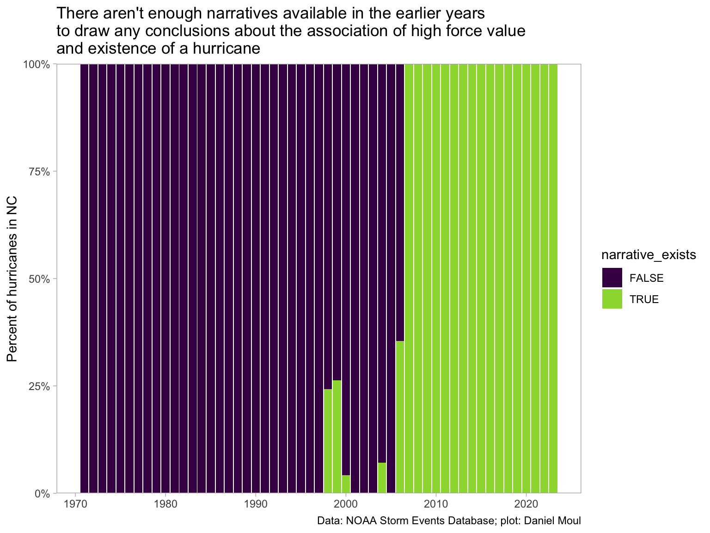
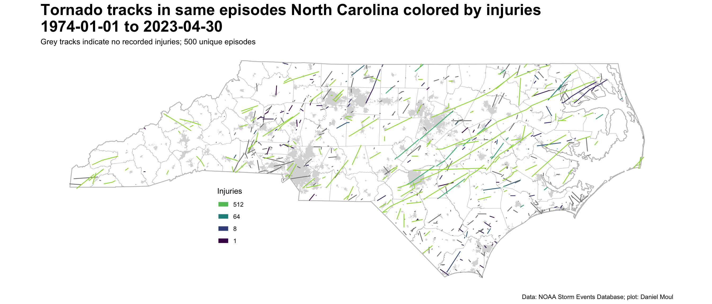
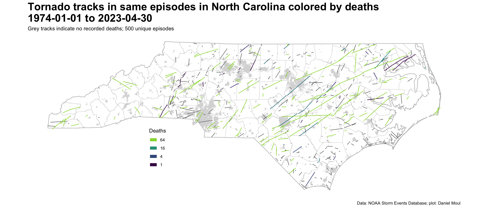

Show the code
source("./setup-and-data-prep.R")source("./setup-and-data-prep.R")Data from Storm Events Database, NOAA National Centers for Environmental Information. Database: https://www.ncdc.noaa.gov/stormevents/ I used the “Search” option.
Downloaded 2023-08-12, 2023-08-13 and 2023-10-15
Documentation: https://www1.ncdc.noaa.gov/pub/data/swdi/stormevents/csvfiles/Storm-Data-Export-Format.pdf and saved as “./data/Storm-Data-Export-Format.pdf”
Storm Events Database
Event Types: Tornado
52 events were reported between 01/01/1970 and 12/31/1973 (1461 days)
410 events were reported between 01/01/1974 and 12/31/1993 (7305 days)
295 events were reported between 01/01/1994 and 12/31/2003 (3652 days)
381 events were reported between 01/01/2004 and 12/31/2013 (3653 days)
292 events were reported between 01/01/2014 and 08/11/2023 (3510 days) Data saved as
"./data/raw/tornados_1970-01-01_to_1973-12-31.csv"
"./data/raw/tornados_1974-01-01_to_1993-12-31.csv"
"./data/raw/tornados_1994-01-01_to_2003-12-31.csv"
"./data/raw/tornados_2004-01-01_to_2013-12-31.csv"
"./data/raw/tornados_2014-01-01_to_2023-04-30.csv>Note: on 2023-08-11 when I downloaded 2023 data, the database included records only through 2023-04-30.
From the documentation explaining tor_f_scale:
Enhanced Fujita Scale describes the strength of the tornado based on the amount and type of damage caused by the tornado. The F-scale of damage will vary in the destruction area; therefore, the highest value of the F-scale is recorded for each event.
EF0 – Light Damage (40 – 72 mph)
EF1 – Moderate Damage (73 – 112 mph)
EF2 – Significant damage (113 – 157 mph)
EF3 – Severe Damage (158 – 206 mph)
EF4 – Devastating Damage (207 – 260 mph)
EF5 – Incredible Damage (261 – 318 mph)City and town data is from https://www.nconemap.gov/datasets/NCDOT::ncdot-city-boundaries/about
I downloaded this data on 2022-09-25. From the readme:
NCDOT City Boundaries This map service is provided by NC Department of Transportation and represents Municipal Boundaries defined through the Powell Bill 2020…. This data is updated annually; usually in February.
I filtered the data to include cities and towns with at least 500 estimated residents in 2021.
Downloaded from US Census Bureau using the tigris package.
Are the more powerful tornadoes associated with hurricanes or hurricane remnants? It would be possible to look at force value and whether “hurricane” is mentioned in the event or episode narrative. Unfortunately the data set doesn’t include enough information to answer that question. This is a biased subset, since narratives were not common before 2007. Supplemental hurricane data would be needed to answer this question.
dta_non_mapping |>
mutate(narrative_exists = !is.na(event_narrative) & !is.na(episode_narrative)) |>
count(year, narrative_exists) |>
mutate(pct_exists = n / sum(n),
.by = year) |>
ggplot() +
geom_col(aes(year, pct_exists, fill = narrative_exists)) +
scale_fill_viridis_d(end = 0.85) +
scale_y_continuous(labels = label_percent(),
expand = expansion(mult = c(0, 0))) +
theme(panel.grid = element_blank()) +
labs(
title = glue("There aren't enough narratives available in the earlier years",
"\nto draw any conclusions about the association of high force value",
"\nand existence of a hurricane"),
x = NULL,
y = "Percent of hurricanes in NC",
caption = my_caption
)
data_for_plot <- dta_non_mapping |>
filter(year >= 2007) |>
mutate(hurricane_related = ifelse(str_detect(event_narrative, "urricane|remnant") |
str_detect(episode_narrative, "urricane|remnant"),
"Yes",
"No")) |>
count(year, hurricane_related) |>
mutate(pct = n / sum(n),
.by = year)
n_hurricane_related <- data_for_plot |>
filter(hurricane_related == "Yes") |>
pull(n) |>
sum()
pct_hurricane_related <- n_hurricane_related / sum(data_for_plot$n)Considering tornadoes in 2007 and later (549 events):
p1 <- data_for_plot |>
ggplot() +
geom_col(aes(year, n, fill = hurricane_related)) +
scale_fill_viridis_d(end = 0.85) +
scale_y_continuous(expand = expansion(mult = c(0, 0.05))) +
theme(panel.grid = element_blank()) +
labs(
subtitle = glue("Count"),
x = NULL,
y = NULL
)
p2 <- data_for_plot |>
ggplot() +
geom_col(aes(year, pct, fill = hurricane_related),
show.legend = FALSE) +
scale_fill_viridis_d(end = 0.85) +
scale_y_continuous(labels = label_percent(),
expand = expansion(mult = c(0, 0))) +
theme(panel.grid = element_blank()) +
labs(
subtitle = glue("Proportion"),
x = NULL,
y = NULL
)
p1 / p2 +
plot_annotation(
title = glue("Only {percent(pct_hurricane_related)} of tornadoes in NC since 2007 have an association with",
"\nmention of a 'hurricane' or 'remnant' in the event or episode narrative",
"\n('remnant' typically refers to a named hurricane or tropical storm)"),
caption = my_caption
)d_episodes <- dta |>
arrange(begin_datetime) |>
group_by(episode_id) |>
summarize(injuries = sum(injuries_direct + injuries_indirect),
deaths = sum(deaths_direct + deaths_indirect)) %>%
st_cast("MULTILINESTRING") |>
ungroup() |>
st_set_crs("NAD83")
dta_episodes <- left_join(
d_episodes,
dta |>
st_drop_geometry(),
by = "episode_id",
multiple = "first"
)
n_episodes <- nrow(dta_episodes)Combining the tracks that are part of the same episode reduces the number of tracks from 1,097 to 500. This is not an accurate count of the number of tornadoes, since one episode can spawn multiple distinct tornadoes.
ggplot() +
geom_sf(data = nc_counties,
fill = NA, linewidth = 0.05) +
geom_sf(data = nc_cities,
fill = "grey85", color = NA) +
geom_sf(data = nc_state,
fill = NA, linewidth = 0.5,
color = "grey") +
geom_sf(data = dta_episodes,
aes(color = injuries)) +
scale_linewidth(range = c(1, 3)) +
scale_color_viridis_c(end = 0.85,
trans = "log2") +
theme(panel.background = element_blank(),
panel.border = element_blank(),
panel.grid = element_blank(),
axis.text = element_blank(),
axis.ticks = element_blank(),
plot.title = element_text(size = rel(2.0), face = "bold"),
legend.position = c(0.3, 0.3)) +
guides(color = guide_legend(override.aes = list(linewidth = 3),
reverse = TRUE)) +
labs(
title = "Tornado tracks in same episodes North Carolina colored by injuries\n1974-01-01 to 2023-04-30",
subtitle = glue("Grey tracks indicate no recorded injuries; {n_episodes} unique episodes"),
caption = my_caption,
color = "Injuries"
)
ggplot() +
geom_sf(data = nc_counties,
fill = NA, linewidth = 0.05) +
geom_sf(data = nc_cities,
fill = "grey85", color = NA) +
geom_sf(data = nc_state,
fill = NA, linewidth = 0.5,
color = "grey") +
geom_sf(data = dta_episodes,
aes(color = deaths)) +
scale_linewidth(range = c(1, 3)) +
scale_color_viridis_c(end = 0.85,
trans = "log2") +
theme(panel.background = element_blank(),
panel.border = element_blank(),
panel.grid = element_blank(),
axis.text = element_blank(),
axis.ticks = element_blank(),
plot.title = element_text(size = rel(2.0), face = "bold"),
legend.position = c(0.3, 0.3)) +
guides(color = guide_legend(override.aes = list(linewidth = 3),
reverse = TRUE)) +
labs(
title = "Tornado tracks in same episodes in North Carolina colored by deaths\n1974-01-01 to 2023-04-30",
subtitle = glue("Grey tracks indicate no recorded deaths; {n_episodes} unique episodes"),
caption = my_caption,
color = "Deaths"
)
The NWS’s method for counting tornadoes is summarized on Storm Data FAQ Page1
Tornadoes may contain multiple segments. A tornado that crosses a county line or state line is considered a separate segment. Also, a tornado that lifts off the ground for less than 4 minutes or 2 miles is considered a separate tornado segment. If the tornado lifts off the ground for greater than 4 minutes or 2 miles, it is considered a separate tornado. Tornadoes reported in Storm Data and the Storm Events Database are in segments. For official tornado counts by state, please use the monthly counts at the Storms Prediction Center Tornado Data.
Can I reconstruct the number of tornadoes given the above definition and the data at hand? Not easily.
I can calculate time_gap_min and prior_event_distance_mi for the events in one episode, however the hard part is in all cases to arrange the events in the correct order so that these calculations are with the right pairs of events.
The case I haven’t solved is when \(T\) tornadoes are recorded as starting at or around the same time: how to order them and the \(\{1..n\}\) subsequent “next segment” records \((n \le T)\)?
Since this question is unanswered (considering the amount of time I’m willing to invest), I will be clear that events are segments, not unique tornadoes and present the simple case, for example in the introduction and in Figure 1.10 Tornado segment track intersections.